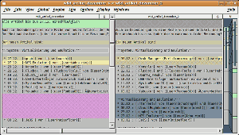

xxdiff
Dieser Artikel wurde für die folgenden Ubuntu-Versionen getestet:
Ubuntu 16.04 Xenial Xerus
Zum Verständnis dieses Artikels sind folgende Seiten hilfreich:
xxdiff  ist eine komfortable grafische Variante zu den bekannten Kommandozeilenprogrammen diff und diff3. xxdiff vereint die Leistungsfähigkeit dieser beiden Programme mit einer übersichtlichen grafischen Benutzeroberfläche.
ist eine komfortable grafische Variante zu den bekannten Kommandozeilenprogrammen diff und diff3. xxdiff vereint die Leistungsfähigkeit dieser beiden Programme mit einer übersichtlichen grafischen Benutzeroberfläche.
Mit xxdiff können Unterschiede zwischen zwei oder drei beliebigen (Text-) Dateien angezeigt werden, außerdem können die verglichenen Dateien anschließend zusammengeführt werden.
Leider verwendet xxdiff die relativ alte Grafikbibliothek Qt4 (Xenial) zur Darstellung, wodurch das Aussehen etwas „altbacken“ ist.
Installation¶
Die Anwendung ist in den offiziellen Paketquellen enthalten - allerdings aus unbekannten Gründen nicht für Ubuntu 14.04. Folgendes Paket muss installiert [1] werden:
xxdiff (universe)
 mit apturl
mit apturl
Paketliste zum Kopieren:
sudo apt-get install xxdiff
sudo aptitude install xxdiff
Benutzung/Konfiguration¶
xxdiff wird – analog zu diff und diff3 – über die Kommandozeile aufgerufen:
xxdiff Datei1 Datei2 # zum Vergleichen von zwei Dateien xxdiff Datei1 Datei2 Datei 3 # zum Vergleichen von drei Dateien
Anschließend erhält man ein zwei- bzw. dreigeteiltes Fenster, in dem die Unterschiede zwischen den beiden bzw. drei Dateien dargestellt werden.

Unterschiede zwischen den Dateien werden farbig dargestellt, einmal im Fenster selber und auch zusätzlich im Rollbalken auf der rechten Seite. Zum einfacheren Vergleichen von Dateien bieten die Menüs "Edit" und "View" einige Möglichkeiten wie z.B. das Suchen innerhalb der Datei oder die schrittweise Anzeige von Unterschieden.
Über die drei Menüs "Global", "Region" und "Line" können Dateien bzw. Teile daraus ausgewählt werden, z.B. um festzulegen, welche Zeilen aus welcher Dateien genommen werden, wenn die Dateien später zusammengeführt werden.
In den Menüs "Options", "Display" und "Windows" lässt sich die Darstellung (auf dem Bildschirm) beeinflussen. Über den Menüpunkt "Display -> Toogle Line number" oder alternativ Alt + L lässt sich die Zeilennummerierung ein- und ausschalten.
Im Menü "File" lassen sich die Datei speichern, auch zusammengeführt und einzeln gegen andere Dateien austauschen. Außerdem kann man aus xxdiff heraus direkt eine Datei editieren, wobei Vim als Editor zum Einsatz kommt.
Wie bereits oben erwähnt bietet xxdiff die Möglichkeit, Dateien direkt zusammenzuführen. Dazu gibt es zwei Möglichkeiten:
über den Menüpunkt "Global -> Merge". Hier werden die Dateien "nur" auf dem Bildschirm zusammengeführt und können dann gespeichert werden.
über den Punkt "File -> Save as merged". Wobei man hier die Möglichkeit hat, falls Konflikte zwischen den Dateien bestehen, sich diese explizit anzeigen zu lassen. Dies sieht dann z.B. so aus:
... >>>>>>>>>>>>>>>>>>>> File 1 alle Artikel bis zum 27.12. einschließlich >>>>>>>>>>>>>>>>>>>> File 2 alle Artikel bis zum 30.12. einschließlich <<<<<<<<<<<<<<<<<<<< ...
Hilfsskripte¶
Es ist auch das Paket
xxdiff-scripts (universe)
mit apturl
Paketliste zum Kopieren:
sudo apt-get install xxdiff-scripts
sudo aptitude install xxdiff-scripts
in den Ubuntu-Paketquellen enthalten. Dieses Paket stellt einige zusätzliche Skripte u.a. zum Vergleich von Dateien aus Versionsverwaltungen wie Subversion zur Verfügung.
 Übersichtsartikel
Übersichtsartikel- Erstellt mit Inyoka
-
 2004 – 2017 ubuntuusers.de • Einige Rechte vorbehalten
2004 – 2017 ubuntuusers.de • Einige Rechte vorbehalten
Lizenz • Kontakt • Datenschutz • Impressum • Serverstatus -
Serverhousing gespendet von